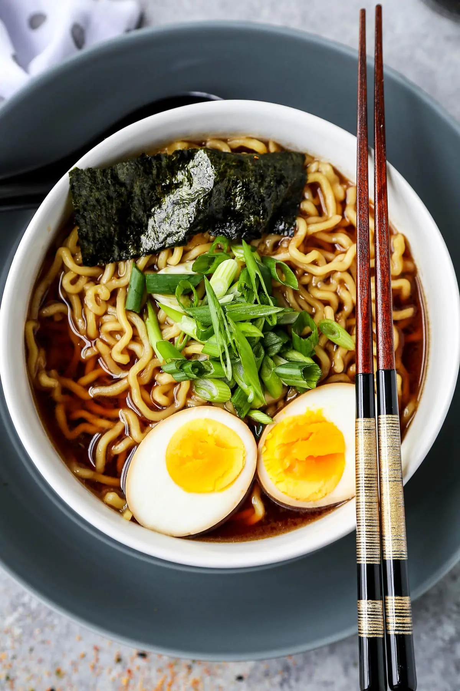

Shoyu Ramen

Ingredients
- Fresh Ramen Noodles
- Sesame Oil
- Garlic
- Ginger
- Soy Sauce
- Cooking Sake
- Dashi
- Mirin
- Ramen Water
- Ramen Egg (Optional)
- Menma
- Dry nori sheets
- Chopped Scallion
- Ground White Pepper
How to Make Shoyu Ramen
- Gather all kitchen tools and ingredients.
- Add broth flavoring elements: Soy sauce, sake, dash etc. Once it's boiling lower the heat, cover and simmer for 15 minutes.
- In a separate pot boil the noodles. Reserve a bit of the noodle water for soup base.
- Add noodles, soup and toppings together.
Main Page